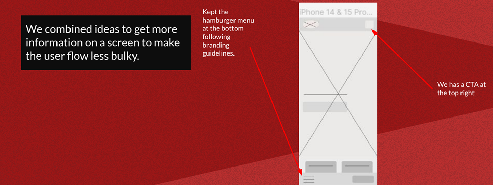
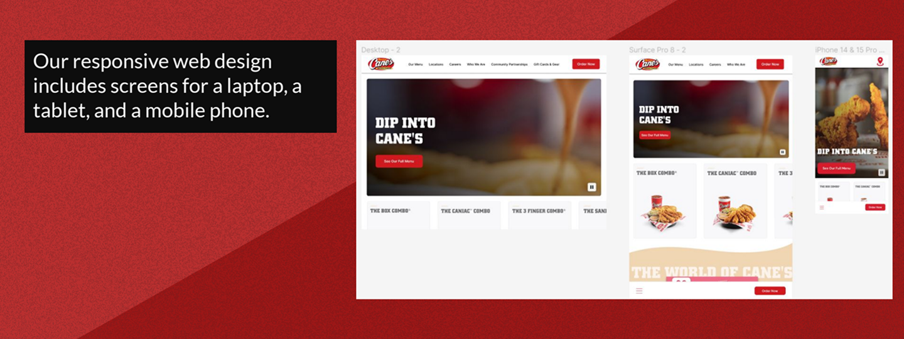
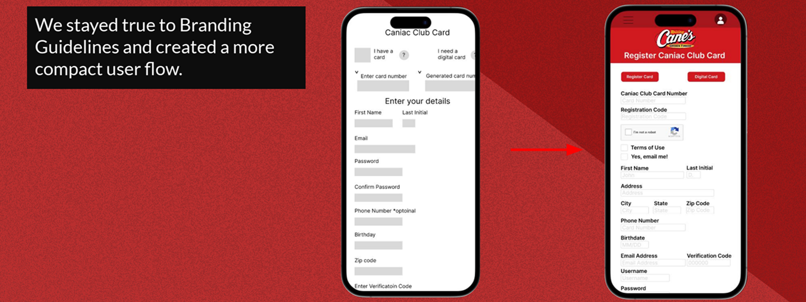

UX RESEARCH | UX DESIGN | KEY TAKEAWAYS

OVERVIEW: Hired to make the Caniac Club Member sign up process more accessible and improve the user flow.
ROLE: UX Researcher, UX/UI designer
TOOLKIT: Figma, Pencil and paper
I conducted both primary and secondary research in the form of user identification, survey creation, administration surveys, affinity diagrams to aggregate survey data, development of insights, and idea generation to support design decisions.
People wanted to have the sign up process 100% online and users wanted the process to be done in fewer screens.
I combined ideas to get more information on a screen to make the user flow less bulky.
I stayed true to Branding Guidelines and created a more compact user flow. I wanted to include different payment options to accommodate people in different socio-economic classes. I wanted to make sure the contrast was high enough to support the users who are visually impaired. I wanted to design for those with physical limitations who could not go in person to complete the signup process.
My responsive web design includes screens for a laptop, a tablet, and a mobile phone.
In researching and making changes to the Caniac Club sign up process, I hope to make the user flow more intuitive and consistent for users. I learned how to connect with people through surveys and get helpful user feedback. I want to complete another round of usability testing before handing this off to the engineers. I recommend turning the Caniac Club into a rewards program. I suggest working with the restaurant team on creating a salad to be added onto the menu.
